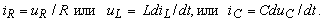
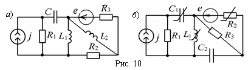

2.2.2. Линейные и нелинейные цепи
В линейной цепи (рис. 2.10, а) значения параметров R (или G), L и C пассивных элементов не зависят от величины и направления токов и напряжений; напряжение и ток в каждом элементе связаны между собой линейным уравнением – алгебраическим или дифференциальным:  Применительно к активным элементам условием линейности является независимость значения ЭДС Еk источников напряжения от протекающих через них токов, и токов Jk источников тока от напряжений на их полюсах (зажимах).  В нелинейной электрической цепи (рис. 2.10, б) электрические напряжения и электрические токи, или(и) электрические токи и магнитные потокосцепления, или(и) электрические заряды и электрические напряжения хотя бы в одном пассивном или активном элементе связаны друг с другом нелинейными зависимостями. Нередко эти зависимости представляют в виде графиков или таблиц. Электромагнитные процессы в нелинейных цепях описываются нелинейными дифференциальными уравнениями. |